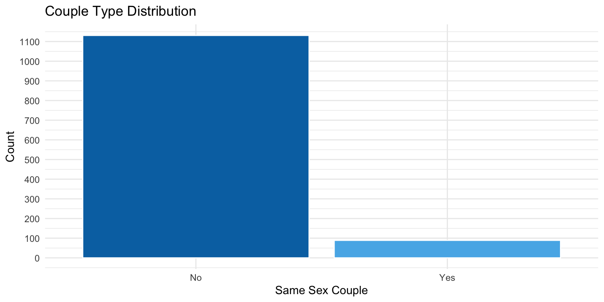
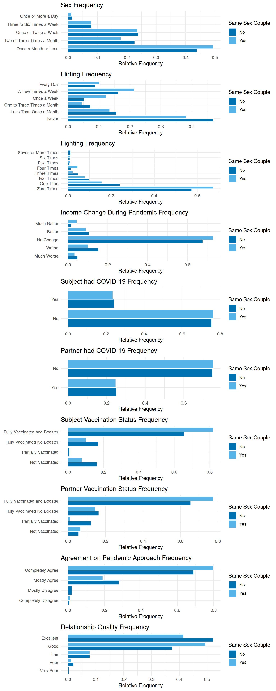
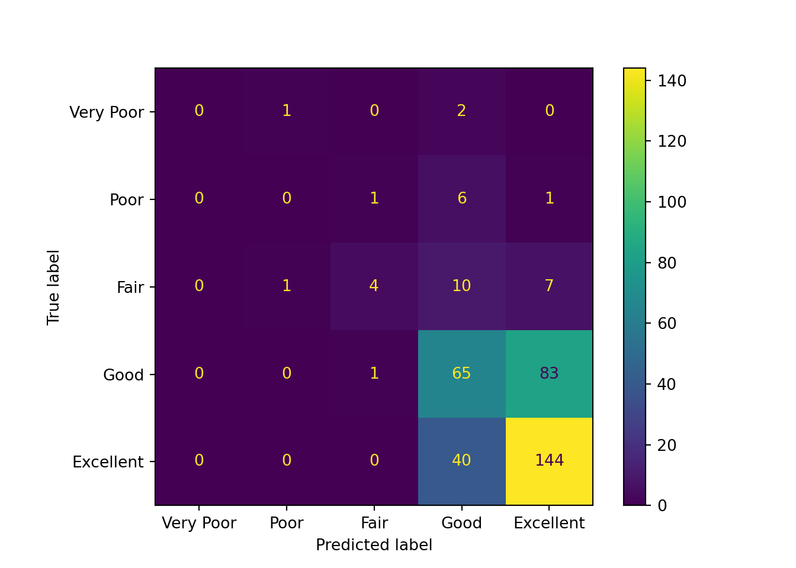
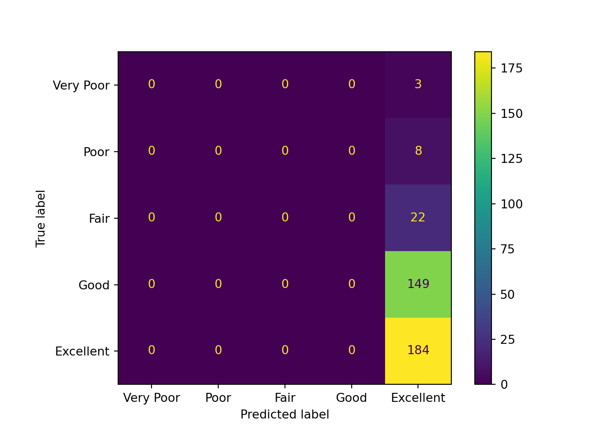

library(diversedata)
library(tidyverse)
library(scales)
library(cowplot)
library(MASS)
library(broom)
library(brant)
library(knitr)How Couples Meet and Stay Together
About the Data
This dataset is adapted from the original dataset How Couples Meet and Stay Together 2017, 2022. This study, led by researchers from Stanford University, surveyed 1,722 U.S. adults in 2022 to explore how relationships form and change with time and focused on dating habits and the impact of the COVID-19 pandemic on relationships.
This adapted dataset focuses on variables that may affect the quality of the relationship, considering demographic characteristics of the subjects, couple dynamics, as well as COVID-19-related variables.
The COVID-19 pandemic had a significant impact on romantic relationships in the United States. This dataset enables exploration of how external factors, like the health of the subjects and changes in income, as well as personal behaviors, like conflict and intimate dynamics, relate to an individual’s perception of the quality of the relationship.
This analysis contributes to discussions around partnership resilience, healthy relationships, and how norms around sexuality and technology shape romantic relationships.
Download
Data Use Agreement: The data I download will not be used to identify individuals.
Metadata
CSV Name
hcmst.csv
Dataset Characteristics
Multivariate
Subject Area
Family and Relationships
Associated Tasks
Classification
Feature Type
Factor, Integer, Numeric
Instances
1328
Features
21
Has Missing Values?
Yes
Variables
| Variable Name | Role | Type | Description | Units | Missing Values |
|---|---|---|---|---|---|
| subject_age | Feature | Numeric | Subject age | years | No |
| subject_education | Feature | Ordinal Categorical | Highest degree obtained. Ordered categories: [‘no_education’ < ‘1st_4th_grade’ < ‘5th_6th_grade’ < ‘7th_8th_grade’ < ‘9th’ < ‘10th’ < ‘11th’ < ‘12th_nodiploma’ < ‘high_school_grad’ < ‘some_college’ < ‘associate_degree’ < ‘bach_degree’ < ‘masters_degree’ < ‘prof_doct_degree’] | - | No |
| subject_sex | Feature | Nominal Categorical | Levels: [‘male’, ‘female’, ‘other’] | - | No |
| subject_ethnicity | Feature | Nominal Categorical | Levels: [‘white’, ‘black’, ‘other’, ‘hispanic’, ‘2_plus_eth’] | - | No |
| subject_income_category | Feature | Ordinal Categorical | Ordered categories: [‘under_5k’ < ‘5k_7k’ < ‘7k_10k’ < ‘10k_12k’ < ‘12k_15k’ < ‘15k_20k’ < ‘20k_25k’ < ‘25k_30k’ < ‘30k_35k’ < ‘35k_40k’ < ‘40k_50k’ < ‘50k_60k’ < ‘60k_75k’ < ‘75k_85k’ < ‘85k_100k’ < ‘100k_125k’ < ‘125k_150k’ < ‘150k_175k’ < ‘175k_200k’ < ‘200k_250k’ < ‘over_250k’] | dollars | No |
| subject_employment_status | Feature | Nominal Categorical | Levels: [‘working_paid_employee’, ‘working_self_employed’, ‘not_working_temp_layoff’, ‘not_working_looking’, ‘not_working_retired’, ‘not_working_disabled’, ‘not_working_other’] | - | No |
| same_sex_couple | Feature | Nominal Categorical | Levels: [‘no’, ‘yes’] | - | No |
| married | Feature | Nominal Categorical | Levels: [‘not_married’, ‘married’] | - | No |
| sex_frequency | Feature | Ordinal Categorical | Ordered categories: [‘once_or_more_a_day’ < ‘3_to_6_times_a_week’ < ‘once_or_twice_a_week’ < ‘2_to_3_times_a_month’ < ‘once_a_month_or_less’] | - | Yes |
| flirts_with_partner | Feature | Ordinal Categorical | Ordered categories: [‘every_day’ < ‘a_few_times_a_week’ < ‘once_a_week’ < ‘1_to_3_times_a_month’ < ‘less_than_once_a_month’ < ‘never’] | - | Yes |
| fights_with_partner | Feature | Ordinal Categorical | Ordered categories: [‘0_times’ < ‘1_time’ < ‘2_times’ < ‘3_times’ < ‘4_times’ < ‘5_times’ < ‘6_times’ < ‘7_or_more_times’] | Amount in the last 7 days | Yes |
| relationship_duration | Feature | Numeric | Duration of relationship | years | Yes |
| children | Feature | Numeric | Number of children in the household. | - | No |
| rel_change_during_pandemic | Feature | Nominal Categorical | Levels: [‘better_than_before’, ‘no_change’, ‘worse_than_before’] | - | No |
| inc_change_during_pandemic | Feature | Ordinal Categorical | Ordered categories: [‘much_worse’ < ‘worse’ < ‘no_change’ < ‘better’ < ‘much_better’] | - | Yes |
| subject_had_covid | Feature | Nominal Categorical | Levels: [‘no’, ‘yes’] | - | Yes |
| partner_had_covid | Feature | Nominal Categorical | Levels: [‘no’, ‘yes’] | - | Yes |
| subject_vaccinated | Feature | Nominal Categorical | Levels: [‘fully_vaccinated_and_booster’, ‘fully_vaccinated_no_booster’, ‘partially_vaccinated’, ‘not_vaccinated’] | - | Yes |
| partner_vaccinated | Feature | Nominal Categorical | Levels: [‘fully_vaccinated_and_booster’, ‘fully_vaccinated_no_booster’, ‘partially_vaccinated’, ‘not_vaccinated’] | - | Yes |
| agree_covid_approach | Feature | Nominal Categorical | Levels: [‘completely_agree’, ‘mostly_agree’, ‘mostly_disagree’, ‘completely_disagree’] | - | Yes |
| relationship_quality | Target | Ordinal Categorical | Levels: [‘excellent’ < ‘good’ < ‘fair’ < ‘poor’ < ‘very_poor’] | - | No |
Key Features of the Dataset
Each row in the dataset represents an individual subject and includes the following selected variables:
Subject demographics (
subject_age,subject_sex,subject_ethnicity,subject_education,subject_income_category,subject_employment_status): age, sex, ethnicity, education level, income level, and employment statusRelationship context (
same_sex_couple,married,relationship_duration,children): whether the subject is part of a same-sex relationship, whether they are married, the duration of the relationship and how many children are in the household.Couple behavior indicators (
sex_frequency,flirts_with_partner,fights_with_partner): sex, flirting and fighting frequency.Pandemic variables (
rel_change_during_pandemic,inc_change_during_pandemic,subject_had_covid,partner_had_covid,subject_vaccinated,partner_vaccinated,agree_covid_approach): interpreted impact of the pandemic in the relationship, income change during the pandemic, if the subject and their partner were sick with COVID-19 and if they were vaccinated.Quality of the relationship (
relationship_quality): variable used to measure the subject’s perceived quality of their relationship.
Purpose and Use Cases
This dataset supports investigations into:
Demographic and behavioral predictors of relationship quality.
How the pandemic experience affected relationships.
Differences in relationship dynamics between different levels of income, sex and sexual orientation.
Case Study
Objective
What behavioral factors are strongly associated with relationship quality in the context of the COVID-19 pandemic? Are these factors different for same sex couples?
This case study examines the association between relationship_quality and a variety of behavioral and pandemic-related variables.
By examining survey data, we aim to:
- Identify the behavioral factors that most strongly affect the perceived relationship quality. We will focus specifically on finding how
sex_frequency,flirts_with_partnerandfights_with_partneraffect the perception of relationship quality and we are going to evaluate if these factors have a different impact on same sex couples (same_sex_couple). - We will also evaluate whether COVID-19 related factors such vaccination status (
subject_vaccinated,partner_vaccinated), COVID-19 illness (subject_had_covid,partner_had_covid), income changes during the pandemic (inc_change_during_pandemic), and agreement on pandemic-related approaches (agree_covid_approach) affected couples’ perceived relationship quality.
Analysis
First, we need to load the libraries that will be used through the exercise, including the diversedata package.
import diversedata as dd
import pandas as pd
import numpy as np
import altair as alt
from IPython.display import Markdown
from sklearn.model_selection import train_test_split
from sklearn.preprocessing import OrdinalEncoder
from sklearn.pipeline import make_pipeline
from sklearn.linear_model import LogisticRegression
from sklearn.ensemble import RandomForestClassifier
from lightgbm.sklearn import LGBMClassifier
from sklearn.model_selection import cross_validate
from sklearn.model_selection import GridSearchCV
from sklearn.metrics import (
ConfusionMatrixDisplay,
confusion_matrix,
classification_report
)
from sklearn.dummy import DummyClassifier1. Data Cleaning & Processing
We can load our data set (hcmst from diversedata package), select our specific variables of interest and remove NAs from our dataset.
# Reading Data
hcmst <- hcmst
# Review total rows
nrow(hcmst)[1] 1328# Select features of interest and removing NA
hcmst <- hcmst |>
dplyr::select(
same_sex_couple,
sex_frequency,
flirts_with_partner,
fights_with_partner,
inc_change_during_pandemic,
subject_had_covid,
partner_had_covid,
subject_vaccinated,
partner_vaccinated,
agree_covid_approach,
relationship_quality) |>
drop_na()
# Remaining row count.
nrow(hcmst)[1] 1220hcmst = dd.load_data("hcmst")
# Review total rows
hcmst.shape[0]1328# Select features of interest and removing NA
hcmst = hcmst[
[
"same_sex_couple",
"sex_frequency",
"flirts_with_partner",
"fights_with_partner",
"inc_change_during_pandemic",
"subject_had_covid",
"partner_had_covid",
"subject_vaccinated",
"partner_vaccinated",
"agree_covid_approach",
"relationship_quality",
]
].dropna()
# Remaining row count.
hcmst.shape[0]12202. Variable Encoding
Our categorical response follows a specific order. For this reason, we require a model that suits ordinal responses.
We should also encode our explanatory variables as factors (and ordered factors) as needed.
First, we can encode our nominal categorical explanatory variables:
hcmst <- hcmst |>
mutate(same_sex_couple = as_factor(same_sex_couple)|>
fct_recode("No" = "no", "Yes" = "yes"))
levels(hcmst$same_sex_couple)[1] "No" "Yes"hcmst['same_sex_couple'] = pd.Categorical(
hcmst['same_sex_couple'],
categories=['no', 'yes'],
)
print(f'same_sex_couple levels: {hcmst["same_sex_couple"].cat.categories.tolist()}')same_sex_couple levels: ['no', 'yes']Then, we can encode all our ordinal, categorical, explanatory, behavioral variables:
hcmst <- hcmst |>
mutate(sex_frequency = as.ordered(sex_frequency)) |>
mutate(sex_frequency = fct_relevel(sex_frequency,
c("once_a_month_or_less", "2_to_3_times_a_month",
"once_or_twice_a_week", "3_to_6_times_a_week",
"once_or_more_a_day")))
levels(hcmst$sex_frequency)[1] "once_a_month_or_less" "2_to_3_times_a_month" "once_or_twice_a_week"
[4] "3_to_6_times_a_week" "once_or_more_a_day" hcmst <- hcmst |>
mutate(flirts_with_partner = as.ordered(flirts_with_partner)) |>
mutate(flirts_with_partner = fct_relevel(flirts_with_partner,
c("never", "less_than_once_a_month",
"1_to_3_times_a_month", "once_a_week",
"a_few_times_a_week", "every_day")))
levels(hcmst$flirts_with_partner)[1] "never" "less_than_once_a_month" "1_to_3_times_a_month"
[4] "once_a_week" "a_few_times_a_week" "every_day" hcmst <- hcmst |>
mutate(fights_with_partner = as.ordered(fights_with_partner)) |>
mutate(fights_with_partner = fct_relevel(fights_with_partner,
c("0_times", "1_time", "2_times", "3_times", "4_times",
"5_times", "6_times", "7_or_more_times")))
levels(hcmst$fights_with_partner)[1] "0_times" "1_time" "2_times" "3_times"
[5] "4_times" "5_times" "6_times" "7_or_more_times"behavioral_variables_levels = {
"sex_frequency" : [
"once_a_month_or_less", "2_to_3_times_a_month",
"once_or_twice_a_week", "3_to_6_times_a_week",
"once_or_more_a_day"
],
"flirts_with_partner" : [
"never", "less_than_once_a_month",
"1_to_3_times_a_month", "once_a_week",
"a_few_times_a_week", "every_day"
],
"fights_with_partner" : [
"0_times", "1_time", "2_times", "3_times", "4_times",
"5_times", "6_times", "7_or_more_times"
],
}
for variable, levels in behavioral_variables_levels.items():
hcmst[variable] = pd.Categorical(
hcmst[variable],
categories=levels,
ordered=True
)
print(f'{variable} levels: {", ".join(hcmst[variable].cat.categories)} \n')sex_frequency levels: once_a_month_or_less, 2_to_3_times_a_month, once_or_twice_a_week, 3_to_6_times_a_week, once_or_more_a_day
flirts_with_partner levels: never, less_than_once_a_month, 1_to_3_times_a_month, once_a_week, a_few_times_a_week, every_day
fights_with_partner levels: 0_times, 1_time, 2_times, 3_times, 4_times, 5_times, 6_times, 7_or_more_times Then, we can encode all our ordinal, categorical, explanatory, COVID-19-related variables:
hcmst <- hcmst |>
mutate(inc_change_during_pandemic = as.ordered(inc_change_during_pandemic)) |>
mutate(inc_change_during_pandemic = fct_relevel(inc_change_during_pandemic,
c("much_worse", "worse", "no_change", "better", "much_better")))
levels(hcmst$inc_change_during_pandemic)[1] "much_worse" "worse" "no_change" "better" "much_better"hcmst <- hcmst |>
mutate(subject_had_covid = as_factor(subject_had_covid))
levels(hcmst$subject_had_covid)[1] "no" "yes"hcmst <- hcmst |>
mutate(partner_had_covid = as_factor(partner_had_covid))
levels(hcmst$partner_had_covid)[1] "yes" "no" hcmst <- hcmst |>
mutate(subject_vaccinated = as.ordered(subject_vaccinated)) |>
mutate(subject_vaccinated = fct_relevel(subject_vaccinated,
c("not_vaccinated", "partially_vaccinated",
"fully_vaccinated_no_booster", "fully_vaccinated_and_booster")))
levels(hcmst$subject_vaccinated)[1] "not_vaccinated" "partially_vaccinated"
[3] "fully_vaccinated_no_booster" "fully_vaccinated_and_booster"hcmst <- hcmst |>
mutate(partner_vaccinated = as.ordered(partner_vaccinated)) |>
mutate(partner_vaccinated = fct_relevel(partner_vaccinated,
c("not_vaccinated", "partially_vaccinated",
"fully_vaccinated_no_booster", "fully_vaccinated_and_booster")))
levels(hcmst$partner_vaccinated)[1] "not_vaccinated" "partially_vaccinated"
[3] "fully_vaccinated_no_booster" "fully_vaccinated_and_booster"hcmst <- hcmst |>
mutate(agree_covid_approach = as.ordered(agree_covid_approach)) |>
mutate(agree_covid_approach = fct_relevel(agree_covid_approach,
c("completely_disagree", "mostly_disagree",
"mostly_agree", "completely_agree")))
levels(hcmst$agree_covid_approach)[1] "completely_disagree" "mostly_disagree" "mostly_agree"
[4] "completely_agree" covid_19_variables_levels = {
"inc_change_during_pandemic": [
"much_worse", "worse", "no_change", "better", "much_better"
],
"subject_had_covid": [
"no", "yes"
],
"partner_had_covid": [
"no", "yes"
],
"subject_vaccinated": [
"not_vaccinated", "partially_vaccinated",
"fully_vaccinated_no_booster", "fully_vaccinated_and_booster"
],
"partner_vaccinated": [
"not_vaccinated", "partially_vaccinated",
"fully_vaccinated_no_booster", "fully_vaccinated_and_booster"
],
"agree_covid_approach": [
"completely_disagree", "mostly_disagree",
"mostly_agree", "completely_agree"
],
}
for variable, levels in covid_19_variables_levels.items():
hcmst[variable] = pd.Categorical(
hcmst[variable],
categories=levels,
ordered=True
)
print(f'{variable} levels: {", ".join(hcmst[variable].cat.categories)} \n')inc_change_during_pandemic levels: much_worse, worse, no_change, better, much_better
subject_had_covid levels: no, yes
partner_had_covid levels: no, yes
subject_vaccinated levels: not_vaccinated, partially_vaccinated, fully_vaccinated_no_booster, fully_vaccinated_and_booster
partner_vaccinated levels: not_vaccinated, partially_vaccinated, fully_vaccinated_no_booster, fully_vaccinated_and_booster
agree_covid_approach levels: completely_disagree, mostly_disagree, mostly_agree, completely_agree Finally, we can encode our target variable:
In this R analysis, will be using an Ordinal Logistic regression model framework. Hence, we need to make sure that our response variable is encoded as an ordered factor.
hcmst <- hcmst |>
mutate(relationship_quality = as.ordered(relationship_quality)) |>
mutate(relationship_quality = fct_relevel(relationship_quality,
c("very_poor", "poor", "fair", "good", "excellent")))
levels(hcmst$relationship_quality)[1] "very_poor" "poor" "fair" "good" "excellent"In this Python analysis, it is not necessary to encode the target variable as ordinal, since the models that we will consider do not natively support ordinal responses; the encoding is shown for demonstration purposes only.
hcmst["relationship_quality"] = pd.Categorical(
hcmst["relationship_quality"],
categories=[
"very_poor", "poor", "fair", "good", "excellent"
],
ordered=True,
)
print(f'relationship_quality levels: {hcmst["relationship_quality"].cat.categories.tolist()}')relationship_quality levels: ['very_poor', 'poor', 'fair', 'good', 'excellent']3. Exploratory Data Analysis
We will visualize histogram charts for our different categorical variables, but first, we will see how different groups were sampled in the survey and how different these samples are for same sex couples.
# We'll use a color blind friendly palette:
cbPalette <- c("#0072B2", "#56B4E9", "#999999", "#E69F00", "#009E73", "#F0E442", "#D55E00", "#CC79A7")
ggplot(hcmst, aes(x = same_sex_couple, fill = same_sex_couple)) +
geom_bar(position = "dodge", color = "white") +
labs(
title = "Couple Type Distribution",
x = "Same Sex Couple",
y = "Count",
fill = "Same Sex Couple"
) +
theme_minimal() +
theme(legend.position = "none") +
scale_fill_manual(values = cbPalette) +
scale_y_continuous(breaks = seq(0, 1200, by = 100))
alt.Chart(hcmst).mark_bar().encode(
x=alt.X("same_sex_couple").title("Same Sex Couple"),
y=alt.Y("count()").title("Count"),
color=alt.Color("same_sex_couple", legend=None),
).properties(title="Couple Type Distribution", width=500, height=350)It can be noted that the sample of same_sex_couples is smaller that that of different-sex couples. In the original study, same sex couples were oversampled. For more information on how the survey data was collected, refer to the original dataset.
To explore our other variables, we will create a function that will be used for visualization. Since we know that the samples for different types of couples are different, we will use relative frequency in our visualizations.
histogram_plot <- function(data, y_var, facet, plot_title = "Relative Frequency by Category", label_map) {
data_long <- data |>
dplyr::select(all_of(c(y_var, facet))) |>
pivot_longer(cols = all_of(y_var), names_to = "var", values_to = "value") |>
mutate(value = recode(value, !!!label_map)) |>
count(var, value, facet_value = .data[[facet]]) |>
group_by(facet_value) |>
mutate(prop = n / sum(n)) |>
ungroup()
ggplot(data_long, aes(x = prop, y = value, fill = facet_value)) +
geom_bar(stat = "identity", position = "dodge", color = "white") +
labs(
title = plot_title,
x = "Relative Frequency",
y = NULL,
fill = "Same Sex Couple"
) +
theme_minimal() +
scale_fill_manual(values = cbPalette)
}sex_freq_labels <- c(
"once_a_month_or_less" = "Once a Month or Less",
"2_to_3_times_a_month" = "Two or Three Times a Month",
"once_or_twice_a_week" = "Once or Twice a Week",
"3_to_6_times_a_week" = "Three to Six Times a Week",
"once_or_more_a_day" = "Once or More a Day"
)
hist_sex_freq <- histogram_plot(hcmst, "sex_frequency", "same_sex_couple",
plot_title = "Sex Frequency", label_map = sex_freq_labels)
flirt_freq_labels <- c(
"never" = "Never",
"less_than_once_a_month" = "Less Than Once a Month",
"1_to_3_times_a_month" = "One to Three Times a Month",
"once_a_week" = "Once a Week",
"a_few_times_a_week" = "A Few Times a Week",
"every_day" = "Every Day"
)
hist_flirt_freq <- histogram_plot(hcmst, "flirts_with_partner",
"same_sex_couple", plot_title = "Flirting Frequency",
label_map = flirt_freq_labels)
fight_freq_labels <- c(
"0_times" = "Zero Times",
"1_time" = "One Time",
"2_times" = "Two Times",
"3_times" = "Three Times",
"4_times" = "Four Times",
"5_times" = "Five Times",
"6_times" = "Six Times",
"7_or_more_times" = "Seven or More Times"
)
hist_fight_freq <- histogram_plot(hcmst, "fights_with_partner",
"same_sex_couple", plot_title = "Fighting Frequency",
label_map = fight_freq_labels)
inc_labels <- c(
"much_worse" = "Much Worse",
"worse" = "Worse",
"no_change" = "No Change",
"better" = "Better",
"much_better" = "Much Better"
)
hist_inc_change_freq <- histogram_plot(hcmst, "inc_change_during_pandemic",
"same_sex_couple", plot_title = "Income Change During Pandemic Frequency",
label_map = inc_labels)
yes_no_label <- c("no" = "No", "yes" = "Yes")
hist_sub_covid_freq <- histogram_plot(hcmst, "subject_had_covid",
"same_sex_couple", plot_title = "Subject had COVID-19 Frequency",
label_map = yes_no_label)
hist_par_covid_freq <- histogram_plot(hcmst, "partner_had_covid",
"same_sex_couple", plot_title = "Partner had COVID-19 Frequency",
label_map = yes_no_label)
vax_label <- c(
"not_vaccinated" = "Not Vaccinated",
"partially_vaccinated" = "Partially Vaccinated",
"fully_vaccinated_no_booster" = "Fully Vaccinated No Booster",
"fully_vaccinated_and_booster" = "Fully Vaccinated and Booster"
)
hist_sub_vax_freq <- histogram_plot(hcmst, "subject_vaccinated",
"same_sex_couple", plot_title = "Subject Vaccination Status Frequency",
label_map = vax_label)
hist_par_vax_freq <- histogram_plot(hcmst, "partner_vaccinated",
"same_sex_couple", plot_title = "Partner Vaccination Status Frequency",
label_map = vax_label)
approach_label <- c(
"completely_disagree" = "Completely Disagree",
"mostly_disagree" = "Mostly Disagree",
"mostly_agree" = "Mostly Agree",
"completely_agree" = "Completely Agree"
)
hist_cov_approach_freq <- histogram_plot(hcmst, "agree_covid_approach",
"same_sex_couple", plot_title = "Agreement on Pandemic Approach Frequency",
label_map = approach_label)
quality_label <- c(
"very_poor" ="Very Poor",
"poor" = "Poor",
"fair" = "Fair",
"good" = "Good",
"excellent" = "Excellent"
)
hist_quality_freq <- histogram_plot(hcmst, "relationship_quality",
"same_sex_couple", plot_title = "Relationship Quality Frequency",
label_map = quality_label)
plot_grid(
hist_sex_freq,
hist_flirt_freq,
hist_fight_freq,
hist_inc_change_freq,
hist_sub_covid_freq,
hist_par_covid_freq,
hist_sub_vax_freq,
hist_par_vax_freq,
hist_cov_approach_freq,
hist_quality_freq,
ncol = 1, align = "v", axis = "lr")
def histogram_plot(data, y_var, facet, label_map, plot_title="Relative Frequency by Category"):
data_cleaned = data.groupby(by=[y_var, facet], observed=False).size().reset_index(name='count')
data_cleaned['prop'] = data_cleaned.groupby(facet, observed=False)['count'].transform(lambda x: x / x.sum())
data_cleaned[y_var] = data_cleaned[y_var].cat.rename_categories(label_map)
plot = alt.Chart(data_cleaned).mark_bar(size=10).encode(
x=alt.X('prop').title('Relative Frequency'),
y=alt.Y(y_var).title(None).scale(alt.Scale(reverse=True)),
yOffset='same_sex_couple',
color=alt.Color('same_sex_couple').title("Same Sex Couple"),
).properties(title=plot_title, width=400, height=alt.Step(10))
return plotsex_freq_labels = {
"once_a_month_or_less": "Once a Month or Less",
"2_to_3_times_a_month": "Two or Three Times a Month",
"once_or_twice_a_week": "Once or Twice a Week",
"3_to_6_times_a_week": "Three to Six Times a Week",
"once_or_more_a_day": "Once or More a Day"
}
hist_sex_freq = histogram_plot(hcmst, 'sex_frequency', 'same_sex_couple', sex_freq_labels, 'Sex Frequency')
flirt_freq_labels = {
"never": "Never",
"less_than_once_a_month": "Less Than Once a Month",
"1_to_3_times_a_month": "One to Three Times a Month",
"once_a_week": "Once a Week",
"a_few_times_a_week": "A Few Times a Week",
"every_day": "Every Day"
}
hist_flirt_freq = histogram_plot(hcmst, "flirts_with_partner", "same_sex_couple", flirt_freq_labels, "Flirting Frequency")
fight_freq_labels = {
"0_times": "Zero Times",
"1_time": "One Time",
"2_times": "Two Times",
"3_times": "Three Times",
"4_times": "Four Times",
"5_times": "Five Times",
"6_times": "Six Times",
"7_or_more_times": "Seven or More Times"
}
hist_fight_freq = histogram_plot(hcmst, "fights_with_partner", "same_sex_couple", fight_freq_labels, "Fighting Frequency")
inc_labels = {
"much_worse": "Much Worse",
"worse": "Worse",
"no_change": "No Change",
"better": "Better",
"much_better": "Much Better"
}
hist_inc_change_freq = histogram_plot(hcmst, "inc_change_during_pandemic", "same_sex_couple", inc_labels, "Income Change During Pandemic Frequency")
yes_no_label = {
"no": "No", "yes": "Yes"
}
hist_sub_covid_freq = histogram_plot(hcmst, "subject_had_covid", "same_sex_couple", yes_no_label, "Subject had COVID-19 Frequency")
hist_par_covid_freq = histogram_plot(hcmst, "partner_had_covid", "same_sex_couple", yes_no_label, "Partner had COVID-19 Frequency")
vax_label ={
"not_vaccinated": "Not Vaccinated",
"partially_vaccinated": "Partially Vaccinated",
"fully_vaccinated_no_booster": "Fully Vaccinated No Booster",
"fully_vaccinated_and_booster": "Fully Vaccinated and Booster"
}
hist_sub_vax_freq = histogram_plot(hcmst, "subject_vaccinated", "same_sex_couple", vax_label, "Subject Vaccination Status Frequency")
hist_par_vax_freq = histogram_plot(hcmst, "partner_vaccinated", "same_sex_couple", vax_label, "Partner Vaccination Status Frequency")
approach_label = {
"completely_disagree": "Completely Disagree",
"mostly_disagree": "Mostly Disagree",
"mostly_agree": "Mostly Agree",
"completely_agree": "Completely Agree"
}
hist_cov_approach_freq = histogram_plot(hcmst, "agree_covid_approach", "same_sex_couple", approach_label, "Agreement on Pandemic Approach Frequency")
quality_label = {
"very_poor": "Very Poor",
"poor": "Poor",
"fair": "Fair",
"good": "Good",
"excellent": "Excellent"
}
hist_quality_freq = histogram_plot(hcmst, "relationship_quality", "same_sex_couple", quality_label, "Relationship Quality Frequency")
alt.vconcat(
hist_sex_freq,
hist_flirt_freq,
hist_fight_freq,
hist_inc_change_freq,
hist_sub_covid_freq,
hist_par_covid_freq,
hist_sub_vax_freq,
hist_par_vax_freq,
hist_cov_approach_freq,
hist_quality_freq
).resolve_legend(color='independent')Same-sex and different-sex couples show similar patterns in how frequently they engage in sexual activity. However, the overall sample is skewed towards reporting low sex frequency. We can also visualize how often couples flirt with or fight with their partners. The distribution of responses shows a tendency toward lower frequencies of both flirting and fighting.
In the context of the COVID-19 pandemic, it can be noted that most subjects had no change in income during the pandemic, did not have COVID, were fully vaccinated including the booster shot, and completely agreed with their partners in terms of their approach to the pandemic.
As for our target variable, most participants perceived the quality of their relationship to be good or excellent.
4. Model Fitting and Assumptions
We will be fitting a proportional odds model, which assumes that the log-odds of being in a higher category of the response variable follows a linear relationship with the explanatory variables.
For our modeling purposes, we will use the MASS package, polr() function to obtain model estimates.
Given that we are using ordinal categorical variables as explanatory variables, we will also set our model to use successive differences contrasts to facilitate the interpretation of the estimates.
options(contrasts = c("contr.treatment", "contr.sdif"))Now, we can fit our model. Noting that polr() does not calculate p-values, we can compute them and bind them to our model estimates.
For the purposes of this exercise, we will only use a subset of the variables in our modeling. We are interested in how behavioral variables, as well as COVID-19 related variables, affect the perception of relationship quality. Additionally, we are interested in seeing if these effects are different for same sex couples.
ordinal_model <- polr(
relationship_quality ~ same_sex_couple +
sex_frequency +
flirts_with_partner +
fights_with_partner +
inc_change_during_pandemic +
subject_had_covid +
partner_had_covid +
subject_vaccinated +
partner_vaccinated +
agree_covid_approach,
data = hcmst, Hess = TRUE
)Warning: glm.fit: fitted probabilities numerically 0 or 1 occurredTo ensure the validity of our analysis, we are going to test the proportional odds assumption. To do so, we can use the Brant-Wald test, which assesses whether our model fulfills this assumption.
bt <- brant(ordinal_model)Warning: glm.fit: fitted probabilities numerically 0 or 1 occurred
Warning: glm.fit: fitted probabilities numerically 0 or 1 occurredWarning in brant(ordinal_model): 3071083 combinations in table(dv,ivs) do not
occur. Because of that, the test results might be invalid.kable(bt, digits = 2)| X2 | df | probability | |
|---|---|---|---|
| Omnibus | 92.40 | 96 | 0.59 |
| same_sex_coupleYes | 1.94 | 3 | 0.58 |
| sex_frequency2_to_3_times_a_month-once_a_month_or_less | 2.25 | 3 | 0.52 |
| sex_frequencyonce_or_twice_a_week-2_to_3_times_a_month | 2.10 | 3 | 0.55 |
| sex_frequency3_to_6_times_a_week-once_or_twice_a_week | 1.38 | 3 | 0.71 |
| sex_frequencyonce_or_more_a_day-3_to_6_times_a_week | 0.01 | 3 | 1.00 |
| flirts_with_partnerless_than_once_a_month-never | 2.17 | 3 | 0.54 |
| flirts_with_partner1_to_3_times_a_month-less_than_once_a_month | 0.17 | 3 | 0.98 |
| flirts_with_partneronce_a_week-1_to_3_times_a_month | 0.01 | 3 | 1.00 |
| flirts_with_partnera_few_times_a_week-once_a_week | 0.70 | 3 | 0.87 |
| flirts_with_partnerevery_day-a_few_times_a_week | 2.64 | 3 | 0.45 |
| fights_with_partner1_time-0_times | 6.33 | 3 | 0.10 |
| fights_with_partner2_times-1_time | 1.14 | 3 | 0.77 |
| fights_with_partner3_times-2_times | 1.77 | 3 | 0.62 |
| fights_with_partner4_times-3_times | 1.81 | 3 | 0.61 |
| fights_with_partner5_times-4_times | 0.37 | 3 | 0.95 |
| fights_with_partner6_times-5_times | 0.03 | 3 | 1.00 |
| fights_with_partner7_or_more_times-6_times | 1.27 | 3 | 0.74 |
| inc_change_during_pandemicworse-much_worse | 1.04 | 3 | 0.79 |
| inc_change_during_pandemicno_change-worse | 0.94 | 3 | 0.82 |
| inc_change_during_pandemicbetter-no_change | 0.26 | 3 | 0.97 |
| inc_change_during_pandemicmuch_better-better | 0.04 | 3 | 1.00 |
| subject_had_covidyes | 0.20 | 3 | 0.98 |
| partner_had_covidno | 6.81 | 3 | 0.08 |
| subject_vaccinatedpartially_vaccinated-not_vaccinated | 5.12 | 3 | 0.16 |
| subject_vaccinatedfully_vaccinated_no_booster-partially_vaccinated | 4.01 | 3 | 0.26 |
| subject_vaccinatedfully_vaccinated_and_booster-fully_vaccinated_no_booster | 0.32 | 3 | 0.96 |
| partner_vaccinatedpartially_vaccinated-not_vaccinated | 2.28 | 3 | 0.52 |
| partner_vaccinatedfully_vaccinated_no_booster-partially_vaccinated | 6.35 | 3 | 0.10 |
| partner_vaccinatedfully_vaccinated_and_booster-fully_vaccinated_no_booster | 0.22 | 3 | 0.97 |
| agree_covid_approachmostly_disagree-completely_disagree | 5.27 | 3 | 0.15 |
| agree_covid_approachmostly_agree-mostly_disagree | 5.21 | 3 | 0.16 |
| agree_covid_approachcompletely_agree-mostly_agree | 1.97 | 3 | 0.58 |
Note that with an \(\alpha = 0.05\), we do not have evidence of a violation of the proportional odds assumption, as indicated by the p-values in the probability column.
However, during both the model fitting process and the Brant-Wald test, several warnings were issued. These are due to instances where combinations of the response variable and predictor levels have no observations. One warning from the Brant test indicates that over 3,000,000 combinations of the dependent variable (dv) and independent variables (ivs) are not present in the data set.
When models include multiple categorical predictors with many levels, the number of possible combinations of predictors and outcomes grows exponentially. In real-world survey data, especially from large data sets, many of these combinations are either extremely rare or entirely missing. This sparsity can compromise the reliability of the Brant test, which assumes sufficient data within each combination to estimate parameters.
One potential solution is to bin levels of categorical variables that have low counts, reducing the number of empty combinations. However, when there are many predictors with multiple levels, even binning may not fully resolve the issue.
This limitation is common in multivariable modeling and reflects constraints in data collection and the inherent sparsity of data. As such, the results from diagnostics like the Brant test should be interpreted with caution.
In this Python analysis, we fit a multi-class logistic regression model, a random forest classifier, and a LightGBM model. We then identify the best-performing model, tune it, examine its feature importances, and assess how well it predicts unseen data.
These models were selected because they can predict more than two classes while also providing interpretable feature importance measures.
First, let’s separate our predictors from the target.
Then, split our data into train and test sets, with the random state specified to make our work reproducible.
X = hcmst.drop(columns=['relationship_quality'])
y = hcmst['relationship_quality']
X_train, X_test, y_train, y_test = train_test_split(X, y, test_size=0.3, random_state=123)Since all of the predictors are ordinal, we’ll use OrdinalEncoder to encode them. Since there are no missing values, imputation is not needed. This preprocessing is necessary since most scikit-learn algorithms require numerical inputs.
Note
OrdinalEncoder will encode the levels of an ordinal column to be equally spaced apart. This may not be desirable for some analyses.
# make sure the specified order for the variables are maintained
level_order = [
hcmst["same_sex_couple"].cat.categories.tolist(),
hcmst["sex_frequency"].cat.categories.tolist(),
hcmst["flirts_with_partner"].cat.categories.tolist(),
hcmst["fights_with_partner"].cat.categories.tolist(),
hcmst["inc_change_during_pandemic"].cat.categories.tolist(),
hcmst["subject_had_covid"].cat.categories.tolist(),
hcmst["partner_had_covid"].cat.categories.tolist(),
hcmst["subject_vaccinated"].cat.categories.tolist(),
hcmst["partner_vaccinated"].cat.categories.tolist(),
hcmst["agree_covid_approach"].cat.categories.tolist(),
]
preprocessor = OrdinalEncoder(categories=level_order)Now that our data has been preprocessed, let’s identify the best performing model using cross validation and a weighted f1 score. A weighted f1 score is the average f1 score across the classes, weighted by support. This accounts for label imbalance.
We will also consider a random forest model and a LightGBM model with non-default hyperparameters chosen to reduce overfitting.
lr_pipe = make_pipeline(preprocessor, LogisticRegression(random_state=123, max_iter=300))
rf_pipe = make_pipeline(preprocessor, RandomForestClassifier(random_state=123))
rf_pipe_b = make_pipeline(
preprocessor,
RandomForestClassifier(
random_state=123, class_weight="balanced", max_depth=13, min_samples_leaf=5
),
)
lgbm_pipe = make_pipeline(preprocessor, LGBMClassifier(random_state=123))
lgbm_pipe_b = make_pipeline(
preprocessor,
LGBMClassifier(
random_state=123, class_weight="balanced", max_depth=8, learning_rate=0.05, reg_lambda=0.1,
),
)
# this function code is adapted from DSCI 573 notes
def mean_std_cross_val_scores(model, X_train, y_train, **kwargs):
"""
Returns mean and std of cross validation
Parameters
----------
model :
scikit-learn model
X_train : numpy array or pandas DataFrame
X in the training data
y_train :
y in the training data
Returns
----------
pandas Series with mean scores from cross_validation
"""
scores = cross_validate(model, X_train, y_train, **kwargs)
mean_scores = pd.DataFrame(scores).mean()
std_scores = pd.DataFrame(scores).std()
out_col = []
for i in range(len(mean_scores)):
out_col.append((f"%0.3f (+/- %0.3f)" % (mean_scores.iloc[i], std_scores.iloc[i])))
return pd.Series(data=out_col, index=mean_scores.index)
classifiers = {
"Dummy": DummyClassifier(),
"Logistic Regression": lr_pipe,
"Random Forest": rf_pipe,
"Random Forest with Non-Default Settings": rf_pipe_b,
"LightGBM": lgbm_pipe,
"LightGBM with Non-Default Settings": lgbm_pipe_b,
}
results = {}
for (name, model) in classifiers.items():
results[name] = mean_std_cross_val_scores(
model, X_train, y_train, return_train_score=True, scoring="f1_weighted"
)Markdown(pd.DataFrame(results).T.to_markdown())| fit_time | score_time | test_score | train_score | |
|---|---|---|---|---|
| Dummy | 0.001 (+/- 0.000) | 0.001 (+/- 0.000) | 0.356 (+/- 0.001) | 0.356 (+/- 0.000) |
| Logistic Regression | 0.028 (+/- 0.006) | 0.003 (+/- 0.000) | 0.565 (+/- 0.031) | 0.578 (+/- 0.017) |
| Random Forest | 0.083 (+/- 0.001) | 0.006 (+/- 0.000) | 0.508 (+/- 0.045) | 0.892 (+/- 0.011) |
| Random Forest with Non-Default Settings | 0.069 (+/- 0.000) | 0.005 (+/- 0.000) | 0.516 (+/- 0.013) | 0.678 (+/- 0.007) |
| LightGBM | 1.366 (+/- 0.065) | 0.005 (+/- 0.001) | 0.502 (+/- 0.020) | 0.840 (+/- 0.012) |
| LightGBM with Non-Default Settings | 0.876 (+/- 0.052) | 0.004 (+/- 0.000) | 0.482 (+/- 0.007) | 0.713 (+/- 0.016) |
The logistic regression model has the best validation score. It also performs better than the baseline dummy model that only predicts the most common class in the training data. Let’s tune it.
param_grid = {
"logisticregression__class_weight": [None, "balanced"],
"logisticregression__C": [0.001, 0.01, 0.1, 1.0, 10, 100, 500, 1000],
}
gs = GridSearchCV(
lr_pipe,
param_grid=param_grid,
scoring="f1_weighted",
n_jobs=-1,
return_train_score=True
)
gs.fit(X_train, y_train)GridSearchCV(estimator=Pipeline(steps=[('ordinalencoder',
OrdinalEncoder(categories=[['no',
'yes'],
['once_a_month_or_less',
'2_to_3_times_a_month',
'once_or_twice_a_week',
'3_to_6_times_a_week',
'once_or_more_a_day'],
['never',
'less_than_once_a_month',
'1_to_3_times_a_month',
'once_a_week',
'a_few_times_a_week',
'every_day'],
['0_times',
'1_time',
'2_times',
'3_t...
'fully_vaccinated_and_booster'],
['completely_disagree',
'mostly_disagree',
'mostly_agree',
'completely_agree']])),
('logisticregression',
LogisticRegression(max_iter=300,
random_state=123))]),
n_jobs=-1,
param_grid={'logisticregression__C': [0.001, 0.01, 0.1, 1.0, 10,
100, 500, 1000],
'logisticregression__class_weight': [None,
'balanced']},
return_train_score=True, scoring='f1_weighted')In a Jupyter environment, please rerun this cell to show the HTML representation or trust the notebook. On GitHub, the HTML representation is unable to render, please try loading this page with nbviewer.org.
Parameters
| estimator | Pipeline(step..._state=123))]) | |
| param_grid | {'logisticregression__C': [0.001, 0.01, ...], 'logisticregression__class_weight': [None, 'balanced']} | |
| scoring | 'f1_weighted' | |
| n_jobs | -1 | |
| refit | True | |
| cv | None | |
| verbose | 0 | |
| pre_dispatch | '2*n_jobs' | |
| error_score | nan | |
| return_train_score | True |
Parameters
| categories | [['no', 'yes'], ['once_a_month_or_less', '2_to_3_times_a_month', ...], ...] | |
| dtype | <class 'numpy.float64'> | |
| handle_unknown | 'error' | |
| unknown_value | None | |
| encoded_missing_value | nan | |
| min_frequency | None | |
| max_categories | None |
Parameters
| penalty | 'l2' | |
| dual | False | |
| tol | 0.0001 | |
| C | 500 | |
| fit_intercept | True | |
| intercept_scaling | 1 | |
| class_weight | None | |
| random_state | 123 | |
| solver | 'lbfgs' | |
| max_iter | 300 | |
| multi_class | 'deprecated' | |
| verbose | 0 | |
| warm_start | False | |
| n_jobs | None | |
| l1_ratio | None |
cv_results = pd.DataFrame(gs.cv_results_)[
[
"mean_train_score",
"std_train_score",
"mean_test_score",
"std_test_score",
"param_logisticregression__class_weight",
"param_logisticregression__C",
"mean_fit_time",
"rank_test_score",
]
].set_index("rank_test_score").sort_index()
Markdown(cv_results.to_markdown())| rank_test_score | mean_train_score | std_train_score | mean_test_score | std_test_score | param_logisticregression__class_weight | param_logisticregression__C | mean_fit_time |
|---|---|---|---|---|---|---|---|
| 1 | 0.579187 | 0.018064 | 0.571117 | 0.0250568 | nan | 500 | 0.0628315 |
| 2 | 0.580082 | 0.017231 | 0.569862 | 0.0259536 | nan | 10 | 0.0588406 |
| 3 | 0.578946 | 0.0181554 | 0.569134 | 0.0249659 | nan | 100 | 0.0553449 |
| 3 | 0.579507 | 0.0181532 | 0.569134 | 0.0249659 | nan | 1000 | 0.0652922 |
| 5 | 0.578452 | 0.0154523 | 0.565133 | 0.027971 | nan | 1 | 0.0353991 |
| 6 | 0.573714 | 0.0136267 | 0.556856 | 0.0310936 | nan | 0.1 | 0.0300628 |
| 7 | 0.543533 | 0.0115322 | 0.53593 | 0.0474138 | nan | 0.01 | 0.0182898 |
| 8 | 0.522414 | 0.0113159 | 0.484141 | 0.0269975 | balanced | 1 | 0.046099 |
| 9 | 0.520908 | 0.0112559 | 0.482557 | 0.0272184 | balanced | 1000 | 0.0608132 |
| 10 | 0.522052 | 0.0113558 | 0.481982 | 0.0296336 | balanced | 10 | 0.0636761 |
| 11 | 0.520994 | 0.012031 | 0.481932 | 0.0273077 | balanced | 100 | 0.054845 |
| 12 | 0.520131 | 0.0117842 | 0.479453 | 0.0288766 | balanced | 500 | 0.080257 |
| 13 | 0.51069 | 0.0170777 | 0.474965 | 0.0216479 | balanced | 0.1 | 0.0321235 |
| 14 | 0.470368 | 0.0238913 | 0.454336 | 0.0339699 | balanced | 0.01 | 0.0171795 |
| 15 | 0.401055 | 0.00675667 | 0.398971 | 0.0165031 | nan | 0.001 | 0.0188427 |
| 16 | 0.38611 | 0.0623655 | 0.378789 | 0.0612768 | balanced | 0.001 | 0.014554 |
From the table above, we can see that setting class_weight=None and C=100, 500, or 1000 yields the best mean validation score. There is also little variation between the validation scores across folds (std_test_score = 0.024966), indicating that the model has a stable performance and is not overly sensitive to the subset of the training data it sees. Since validation performance is the same across these values of C, we will select the more regularized model (C=100) to prioritize generalization, reduce the risk of overfitting, and improve coefficient stability.
best_lr_pipe = make_pipeline(
preprocessor, LogisticRegression(class_weight=None, C=100, random_state=123, max_iter=300)
)
best_lr_pipe.fit(X_train, y_train)Pipeline(steps=[('ordinalencoder',
OrdinalEncoder(categories=[['no', 'yes'],
['once_a_month_or_less',
'2_to_3_times_a_month',
'once_or_twice_a_week',
'3_to_6_times_a_week',
'once_or_more_a_day'],
['never', 'less_than_once_a_month',
'1_to_3_times_a_month',
'once_a_week',
'a_few_times_a_week',
'every_day'],
['0_times', '1_time', '2_times',
'3_times', '4_times', '5_time...
['not_vaccinated',
'partially_vaccinated',
'fully_vaccinated_no_booster',
'fully_vaccinated_and_booster'],
['not_vaccinated',
'partially_vaccinated',
'fully_vaccinated_no_booster',
'fully_vaccinated_and_booster'],
['completely_disagree',
'mostly_disagree', 'mostly_agree',
'completely_agree']])),
('logisticregression',
LogisticRegression(C=100, max_iter=300, random_state=123))])In a Jupyter environment, please rerun this cell to show the HTML representation or trust the notebook. On GitHub, the HTML representation is unable to render, please try loading this page with nbviewer.org.
Parameters
| steps | [('ordinalencoder', ...), ('logisticregression', ...)] | |
| transform_input | None | |
| memory | None | |
| verbose | False |
Parameters
| categories | [['no', 'yes'], ['once_a_month_or_less', '2_to_3_times_a_month', ...], ...] | |
| dtype | <class 'numpy.float64'> | |
| handle_unknown | 'error' | |
| unknown_value | None | |
| encoded_missing_value | nan | |
| min_frequency | None | |
| max_categories | None |
Parameters
| penalty | 'l2' | |
| dual | False | |
| tol | 0.0001 | |
| C | 100 | |
| fit_intercept | True | |
| intercept_scaling | 1 | |
| class_weight | None | |
| random_state | 123 | |
| solver | 'lbfgs' | |
| max_iter | 300 | |
| multi_class | 'deprecated' | |
| verbose | 0 | |
| warm_start | False | |
| n_jobs | None | |
| l1_ratio | None |
5. Model Interpretation
First, we will calculate the p-value (as polr()does not calculate it) and we are going to exponentiate the estimates for easier interpretation of the log-odds.
summary_partial_ordinal_model <- cbind(tidy(ordinal_model),
p.value = pnorm(abs(tidy(ordinal_model)$statistic), lower.tail = FALSE) * 2) |>
mutate_if(is.numeric, round, 2)
summary_partial_ordinal_model <- summary_partial_ordinal_model |>
mutate(exp_estimate = exp(estimate)) |>
filter(p.value < 0.05,
coef.type == "coefficient")
kable(summary_partial_ordinal_model, digits = 2)| term | estimate | std.error | statistic | coef.type | p.value | exp_estimate |
|---|---|---|---|---|---|---|
| same_sex_coupleYes | -0.53 | 0.22 | -2.41 | coefficient | 0.02 | 0.59 |
| sex_frequency2_to_3_times_a_month-once_a_month_or_less | 0.64 | 0.15 | 4.18 | coefficient | 0.00 | 1.90 |
| flirts_with_partnerevery_day-a_few_times_a_week | 0.89 | 0.28 | 3.16 | coefficient | 0.00 | 2.44 |
| fights_with_partner1_time-0_times | -0.65 | 0.14 | -4.55 | coefficient | 0.00 | 0.52 |
| inc_change_during_pandemicno_change-worse | 0.53 | 0.17 | 3.18 | coefficient | 0.00 | 1.70 |
| partner_vaccinatedpartially_vaccinated-not_vaccinated | 0.87 | 0.30 | 2.88 | coefficient | 0.00 | 2.39 |
| agree_covid_approachmostly_agree-mostly_disagree | 1.20 | 0.40 | 3.02 | coefficient | 0.00 | 3.32 |
| agree_covid_approachcompletely_agree-mostly_agree | 0.58 | 0.13 | 4.43 | coefficient | 0.00 | 1.79 |
Positive estimates are associated with higher relationship quality, while negative estimates are associated with lower relationship quality. Additionally, the exponential of the estimate is the odds ratio, which represents how much the odds of having a higher relationship_quality level changes between levels.
Considering
- If \(OR > 1: (OR - 1) \times 100%\) = % Higher odds
- If \(OR < 1: (1 - OR) \times 100%\) = % Lower odds
We can interpret these estimates:
same_sex_couple: Being in a same-sex couple is associated with 41% lower odds of reporting better relationship quality compared to different-sex couples.sex_frequency: People who have sex 2-3 times a month have 90% higher odds of reporting better relationship quality that those who have sex once a month or less.flirts_with_partner: Flirting every day vs a few times per week is associated with 140% higher odds of better relationship quality.fights_with_partner: Fighting once vs none is associated with 48% lower odds of better relationship quality.inc_change_during_pandemic: Individuals whose income did not change during the pandemic had 70% higher odds of reporting better relationship quality vs those whose income was worse.partner_vaccinated: Having a partner who is partially vaccinated is associated with 140% higher odds of having a better relationship quality.agree_covid_approach: Mostly agreeing with a partner’s approach to COVID vs mostly disagreeing is associated with 230% higher odds of better relationship quality.agree_covid_approach: Completely agreeing with a partner’s approach to COVID vs mostly agreeing is associated with 80% higher odds of better relationship quality.
Now, we can take a look at the feature importances via the absolute value of the coefficients of the logistic regression model that we fitted.
# get absolute value coefficients into a dataframe
feature_names = X.columns
classes = best_lr_pipe.named_steps['logisticregression'].classes_
abs_coef_df = pd.DataFrame(
np.abs(best_lr_pipe.named_steps['logisticregression'].coef_.T),
columns=classes,
index=feature_names
)
abs_coef_long = (
abs_coef_df.reset_index()
.melt(id_vars="index", var_name="class", value_name="absolute_value_coefficient")
.rename(columns={"index": "feature"})
)
# clean up labels for visualization
abs_coef_long["class"] = abs_coef_long["class"].str.replace("_", " ").str.title()
abs_coef_long["feature"] = abs_coef_long["feature"].str.replace("_", " ").str.title()
# make visualization
alt.Chart(abs_coef_long).mark_bar().encode(
x=alt.X("absolute_value_coefficient").title("| Coefficient |"),
y=alt.Y("feature").sort("x").title("Feature"),
).properties(width=150, height=150).facet(
facet=alt.Facet("class").title("Relationship Quality").sort("descending"), columns=2
).resolve_scale(
y="independent"
)Above, we can see that the feature “Partner Had Covid” is the most influential predictor for the “Very Poor” and “Poor” relationship quality classes.
For the “Good” and “Fair” classes, the most important feature is “Subject Had Covid”.
Meanwhile, “Sex Frequency” is the strongest predictor for the “Excellent” class.
Note
These feature importances reflect how the model uses the features to make predictions, but they do not imply statisical, causal, or real-world effects/associations.
We will also see in the subsequent part of the analysis that the model does not have a very high performance and these specific feature importances may not be helpful in practical applications, but are investigated in this analysis for demonstration purposes.
6. Prediction
With our fitted model, we are now able to make predictions on new examples. Based on behavioral and COVID-19 related variables, we can predict the probabilities of the different levels of perceived relationship_quality for a specific subject. Focusing on the levels that were associated with statistically significant factors:
round(predict(ordinal_model, tibble(
same_sex_couple = "Yes",
sex_frequency = "once_a_month_or_less",
flirts_with_partner = "a_few_times_a_week",
fights_with_partner = "1_time",
inc_change_during_pandemic = "worse",
subject_had_covid = "no",
partner_had_covid = "no",
subject_vaccinated = "not_vaccinated",
partner_vaccinated = "not_vaccinated",
agree_covid_approach = "mostly_disagree"
),
type = "probs"),2)very_poor poor fair good excellent
0.08 0.32 0.41 0.17 0.02 round(predict(ordinal_model, tibble(
same_sex_couple = "No",
sex_frequency = "2_to_3_times_a_month",
flirts_with_partner = "every_day",
fights_with_partner = "0_times",
inc_change_during_pandemic = "no_change",
subject_had_covid = "no",
partner_had_covid = "no",
subject_vaccinated = "not_vaccinated",
partner_vaccinated = "partially_vaccinated",
agree_covid_approach = "mostly_agree"
),
type = "probs"), 2)very_poor poor fair good excellent
0.00 0.00 0.02 0.20 0.78 We can note that a subject involved in a same-sex couple, who has sex once a month or less, flirts with their partner a few times a week, fought with their partner once in the last week, experienced lower income during the pandemic, is not vaccinated (nor is their partner), and mostly disagrees with their partner’s approach to COVID, has a 41% probability of perceiving their relationship quality as fair.
On the other hand, a subject involved in a different-sex couple, who has sex two or three times a month, flirts with their partner on a daily basis, has not fought with their partner in the last week, experienced no change in income during the pandemic, has a partially vaccinated partner, and mostly agrees with their partner’s approach to COVID, has a 78% probability of perceiving their relationship quality as excellent.
Let’s see how well our model predicts on the training data and unseen data, then compare it to a baseline dummy model. First, via a confusion matrix:
cm = ConfusionMatrixDisplay.from_estimator(
best_lr_pipe,
X_train,
y_train,
labels=["very_poor", "poor", "fair", "good", "excellent"],
display_labels=["Very Poor", "Poor", "Fair", "Good", "Excellent"],
)cm = ConfusionMatrixDisplay.from_estimator(
best_lr_pipe,
X_test,
y_test,
labels=["very_poor", "poor", "fair", "good", "excellent"],
display_labels=["Very Poor", "Poor", "Fair", "Good", "Excellent"],
)
dc = DummyClassifier()
dc.fit(X_train, y_train)DummyClassifier()In a Jupyter environment, please rerun this cell to show the HTML representation or trust the notebook.
On GitHub, the HTML representation is unable to render, please try loading this page with nbviewer.org.
Parameters
| strategy | 'prior' | |
| random_state | None | |
| constant | None |
cm = ConfusionMatrixDisplay.from_estimator(
dc,
X_test,
y_test,
labels=["very_poor", "poor", "fair", "good", "excellent"],
display_labels=["Very Poor", "Poor", "Fair", "Good", "Excellent"],
)
From the above confusion matrices, we can observe that the findings from the training set and testing set are similar:
- The “Excellent” category has the largest number of correct predictions.
- Predictions for the true “Very Poor”, “Poor”, and “Fair” qualities are scattered across multiple categories.
- Predictions for the true “Good” quality are concentrated at “Excellent” and “Good”.
- The model tends to predict higher relationship quality. This may be partly due to the small number of samples for the lower relationship quality classes.
- The model appears to have difficulty distinguishing between “Good” and “Excellent” classes.
Additionally, as expected, the baseline dummy model only predicts the “Excellent” class.
Let’s take a look at some metrics:
y_pred_train = best_lr_pipe.predict(X_train)
print(
classification_report(
y_train,
y_pred_train,
labels=["very_poor", "poor", "fair", "good", "excellent"],
target_names=["Very Poor", "Poor", "Fair", "Good", "Excellent"],
)
) precision recall f1-score support
Very Poor 0.00 0.00 0.00 1
Poor 0.50 0.06 0.11 16
Fair 0.71 0.16 0.26 74
Good 0.53 0.45 0.49 319
Excellent 0.65 0.82 0.72 444
accuracy 0.61 854
macro avg 0.48 0.30 0.32 854
weighted avg 0.60 0.61 0.58 854
Note
Precision is set to 0 for labels with no predicted samples.
y_pred = best_lr_pipe.predict(X_test)
print(
classification_report(
y_test,
y_pred,
labels=["very_poor", "poor", "fair", "good", "excellent"],
target_names=["Very Poor", "Poor", "Fair", "Good", "Excellent"],
)
) precision recall f1-score support
Very Poor 0.00 0.00 0.00 3
Poor 0.00 0.00 0.00 8
Fair 0.67 0.18 0.29 22
Good 0.53 0.44 0.48 149
Excellent 0.61 0.78 0.69 184
accuracy 0.58 366
macro avg 0.36 0.28 0.29 366
weighted avg 0.56 0.58 0.56 366
Note
Precision is set to 0 for labels with no predicted samples.
y_pred_dummy = dc.predict(X_test)
print(
classification_report(
y_test,
y_pred_dummy,
labels=["very_poor", "poor", "fair", "good", "excellent"],
target_names=["Very Poor", "Poor", "Fair", "Good", "Excellent"],
)
) precision recall f1-score support
Very Poor 0.00 0.00 0.00 3
Poor 0.00 0.00 0.00 8
Fair 0.00 0.00 0.00 22
Good 0.00 0.00 0.00 149
Excellent 0.50 1.00 0.67 184
accuracy 0.50 366
macro avg 0.10 0.20 0.13 366
weighted avg 0.25 0.50 0.34 366
Note
Precision is set to 0 for labels with no predicted samples.
From the above metrics, we can see that the logistic regression model’s test scores are slightly lower than its train scores. This indicates that the model is not overfitting to the training data.
We can also see that the test accuracy is low (0.58), but accuracy can be misleading with imbalanced data.
Meanwhile, the f1-scores (with an unweighted average of 0.29 and a weighted average of 0.56) still indicate that the model is not performing particularly well, especially for the lower relationship quality classes.
The logistic regression model achieves a slightly higher accuracy (0.58) compared to the baseline dummy model (0.50), but we cannot conclude that it performs better solely based on this metric, due to the class imbalance in the data.
Nonetheless, the logistic regression model performs around two times better in terms of the unweighted f1-score average (0.29 vs. 0.13) and the weighted f1-score average (0.56 vs. 0.34), suggesting that it offers more balanced performance across all classes.
Discussion
Note
The conclusions regarding the statistical and real-world effects/associations can only be made from the statistical R analysis and not the Python analysis.
The Python analysis demonstrates a way to obtain feature importances from a model, but it is important to keep in mind that those feature importances only indicate what the model deems to be important for its predictions. They do not imply statisical, causal, or real-world effects/associations.
This analysis explored how relationship habits, particularly in the context of the COVID-19 pandemic relate to perceived relationship quality across different types of couples. Through the analysis, results highlight that relationship behaviors and shared beliefs meaningfully affect how individuals evaluate their relationships. More specifically, we could conclude the following:
Behaviors are important: More frequent sex and flirting are associated with higher perceived relationship quality, while more frequent fighting affects that perception negatively.
Shared beliefs are beneficial: Agreement with a partner’s approach to COVID-19 was a very strong predictor of relationship quality. Moving in a direction of agreement had a significant positive association.
External factors play a role as well: Financial stability during the pandemic, as well as the partner’s vaccination status were also linked to better relationship quality, suggesting that alignment on external factors, such as health and financial concerns, could cause stress in couple dynamics contribute to positive perceptions.
Perceived relationship quality varied by couple type: Individuals in same-sex couples, on average, reported slightly lower relationship quality compared to those in different-sex couples. Although this difference was modest, it was statistically significant, which may warrant a need for further exploration into the factors that may influence these perceptions.
Encoding and model choice are critical: Model selection is tied to the type of response variable. Ordinal categorical response variables are tied to ordinal logistic regression models. Also, encoding categorical predictors must be done with care to ensure meaningful and interpretable contrasts.
Sparsity may affect results: When categorical variables have many levels, certain combinations of predictors may be underrepresented. This sparsity may impact the model and its assumptions, so caution is advised when drawing conclusions from underpopulated subgroups.
Attribution
Data adapted from Rosenfeld, Michael J., Reuben J. Thomas, and Sonia Hausen. 2023. How Couples Meet and Stay Together 2017-2020-2022 Combined Data Set. [Computer files]. Stanford, CA: Stanford University Libraries. Data.
Derbyshire K, Thai S, Midgley C, Lockwood P. Love under lockdown: How changes in time with partner impacted stress and relationship outcomes during the COVID-19 pandemic. J Soc Pers Relat. 2023 Sep;40(9):2918-2945. DOI: 10.1177/02654075231162599. Epub 2023 Mar 9. PMID: 37744688; PMCID: PMC10009005.